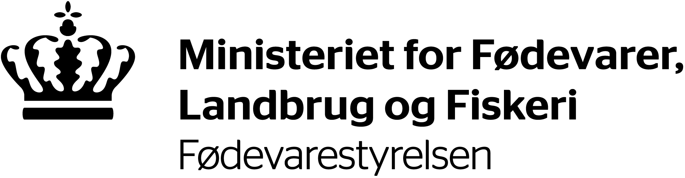

"Når vi smider mad ud, så spilder vi både selve fødevaren og
alle de ressourcer, der er brugt til at fremstille den.
Det er miljø- og klimabelastende, og det er spild af penge."

Om Os
Det er regeringens ambition at fremme miljø- og klimavenlige løsninger, og at sikre, at vi også i fremtiden
kan brødføde jordens voksende befolkning med begrænsede ressourcer til rådighed.
”Inden 2030 skal det globale madaffald (inkl. madspild, red.) på detail- og forbrugerniveau
pr. indbygger halveres og fødevaretab i produktions- og forsyningskæder, herunder tab af afgrøder efter høst, skal reduceres."
Regeringen har løbende projekter kørende som aktivt arbejder med at nedbringe Danmarks madspild, inklusivt et partnerskab med Tænketanken ONE\THIRD.
Hvis du ønsker at læse mere om madspild og hvad ministeriet gør for at bekæmpe, klik nedenstående.